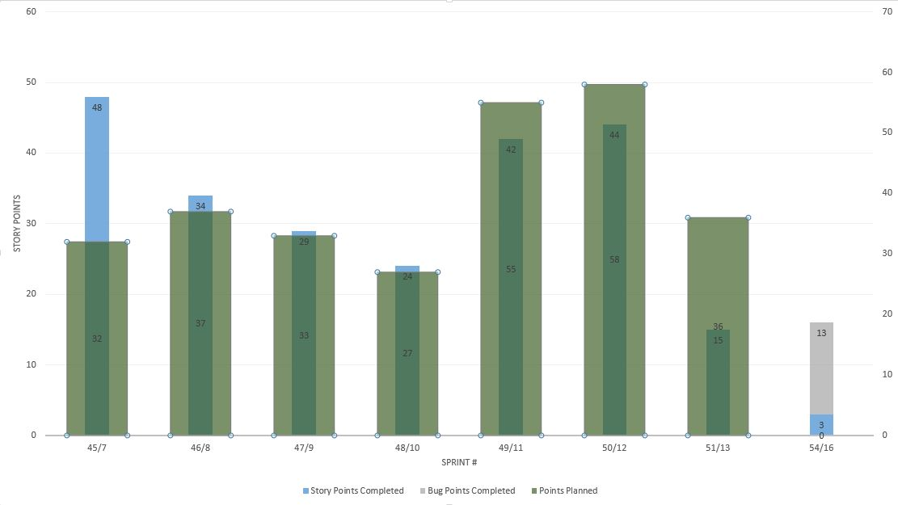

Priority Quote 2.1
Sprint 54 Review/Demo
October 22, 2014
Joan Budden
Michelle Storz
Project Team
- Michelle Storz - Product Owner
- Kellie Kettner - Small Group SME
- Tara Johnson - Individual SME
- AgentX
- Matt Shanahan - Technical Lead
- Yogi Alle - Senior Developer
- Andrea Houg - Developer
- Sri Yattapu - QA
- Erin Cunningham - Project Manager
- Diane O'Shea - Business Analyst
- Gary Davis - Developer
- Tom Stoepker - Developer
- Matt Byl - Developer
- Caleb Packard - Developer
Project Objective
This project will result in an Agent-based quoting and enrollment tool for Small Group and Individual new business and renewals. This new tool will be the next generation Agent user experience which will be an integrated set of quoting and enrollment tools developed from past experience and lessons learned.
Project Timeline

Project Updates
Scope
Determining deliverables for 11/15.
Project Updates
Budget
No updates for this sprint.
Project Updates
Resources
Fantastic Four returned to Online Shopping.
New Team Members
- Caleb Packard
- Matt Byl
Team Velocity
Sprint 54 Review
-
Stories
- Consume Contract 1.9
- SG - UI for subgroup and class on application / proposal
- IND - FFM UI
- IND - Payment Notification Service updates
Sprint 54 Review
-
Bugs
- Caching of plans
- Agent access issue - IND not able to be assigned to quote
- IE8 bugs - Jquery version causing IE8 to crash - removed version and put it back
- IND - Dental rate calculating for all members even if waiving
- IND - Spacing on plan comparison page
- SG - Member waiving medical and dental causing no rates to return
- SG - Import census error causing duplicate rows causing no rates to return
- SG - Supporting documentation error
- SG - PHIN Authentication
Experiments /
Innovation
- No experiments or Innovation
Definition of Done
Story
- All code checked in - developer
- All unit tests passing - developer
- All Acceptance tests (performed in test environment) identified, written and passing - project manager identifies and documents acceptance, product owner passes
- Functional testing - QA engineer (optional - not necessary for every sprint)
- Must pass PH code reviewer process
- Unit Test Code Coverage for all applicable architecture layers (business logic layer)
- Compliance with Development Team Code Standards (StyleCop)
- Passes team member code review
- Could be added to a change control
Definition of Done
Sprint
- All story criteria, plus...
- 100% of committed stories complete as defined above
- All stories are able to be added to a change control (ready for a soft launch if necessary)
- Known issues must be documented within sprint (can be resolved in later sprint)
Definition of Done
Release
- All sprint criteria, plus...
- Deployment packages (change control) created
- Change Control request completed
- All Test Suites passing
- Unit Testing
- Integration
- Front End
- Documentation of Processes and Procedures to ensure affected parties are educated properly
- System documentation (internal PH wiki)
Demo
Priority Quote 2.1 TestPriority Quote 2.1 Dev